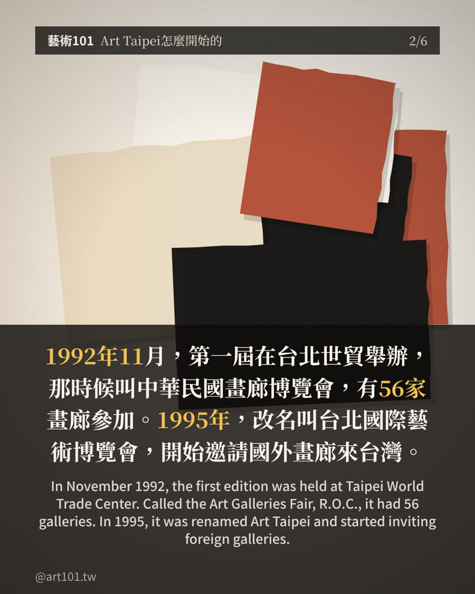
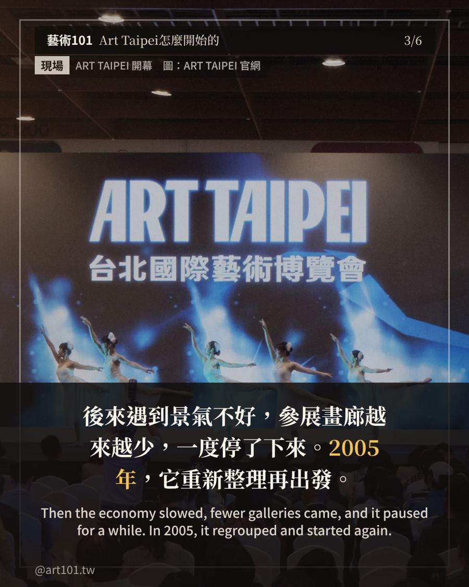
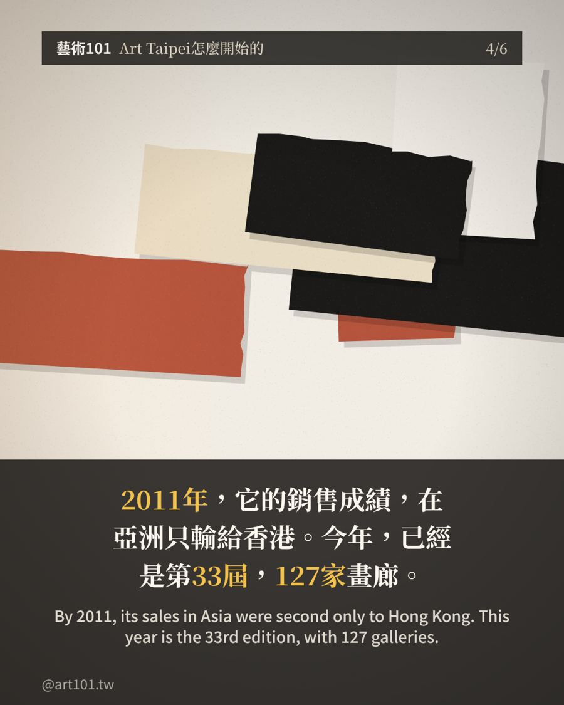
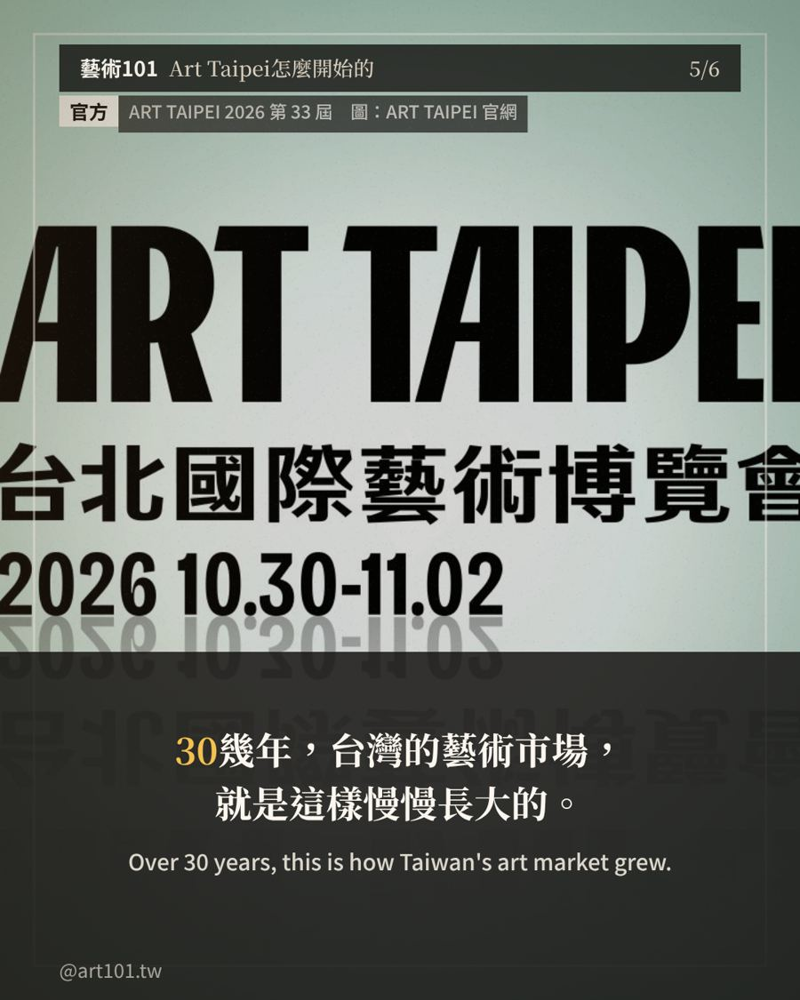
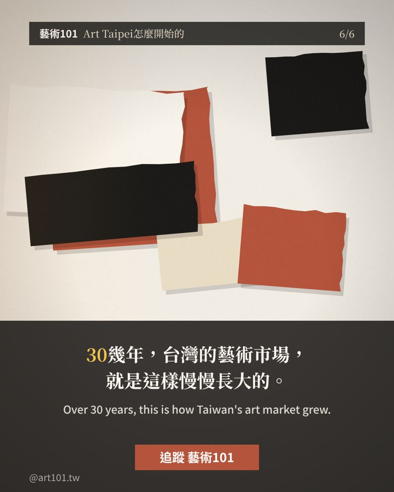

看展指南・台北藝術週
Art Taipei怎麼開始的
1992 年，56 家畫廊，故事從這裡開始。
1992年11月，第一屆在台北世貿舉辦，那時候叫中華民國畫廊博覽會，有56家畫廊參加。1995年，改名叫台北國際藝術博覽會，開始邀請國外畫廊來台灣。
後來遇到景氣不好，參展畫廊越來越少，一度停了下來。2005年，它重新整理再出發。
2011年，它的銷售成績，在亞洲只輸給香港。今年，已經是第33屆，127家畫廊。
30幾年，台灣的藝術市場，就是這樣慢慢長大的。





